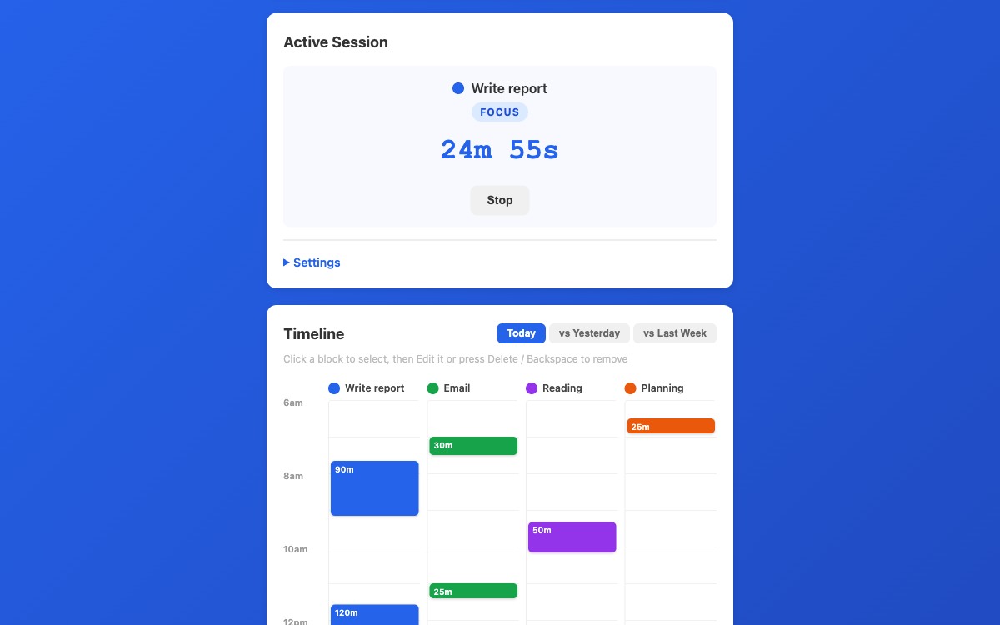
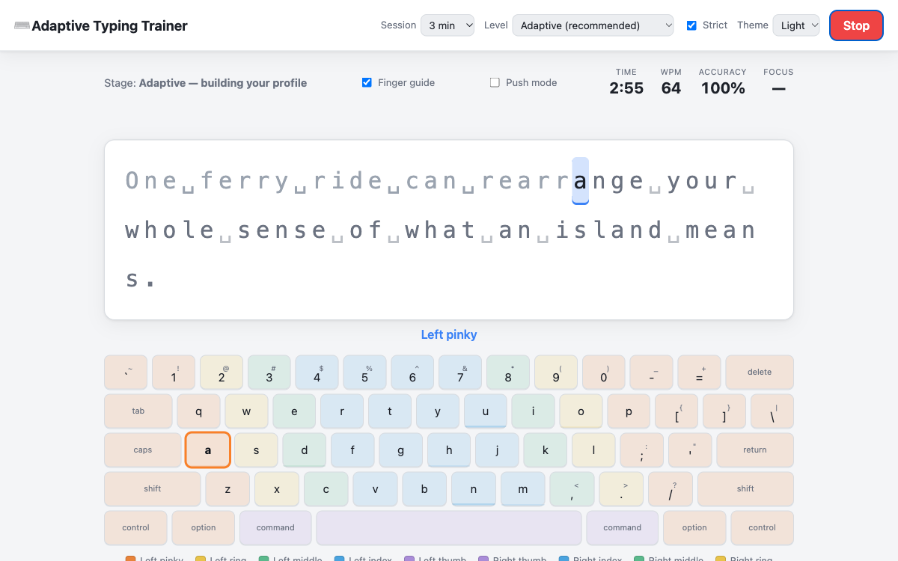
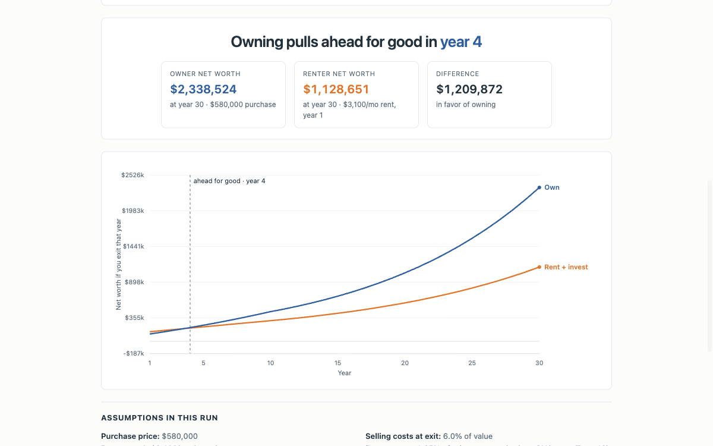
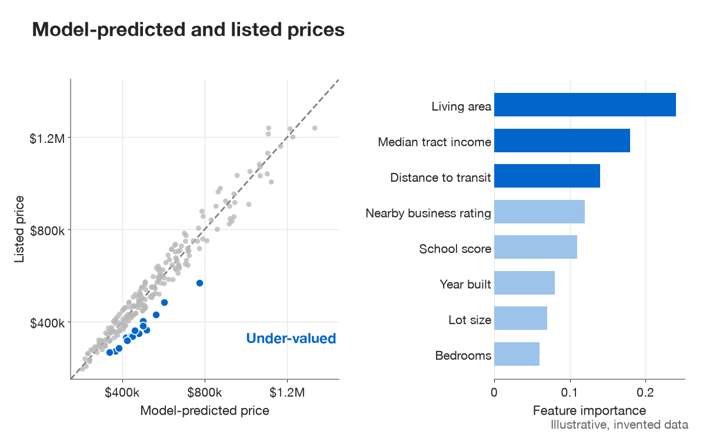

A private budget tracker for logging each spend as it happens and watching monthly totals build up by category. Charts show the current month by category and the last six months side by side, and data stays in the browser, with optional sync across devices and CSV export.
Built with: HTML, Chart.js; installable as a web app
Time Tracker + Pomodoro

Timer and daily timeline
A personal time-tracking web app with a built-in Pomodoro timer: create tasks, track time on each, and work in focus periods with breaks. Tracked time appears on a daily timeline as it accrues, and data syncs across laptop and phone.
Built with: JavaScript, HTML, CSS, Supabase, GitHub Pages
Adaptive Typing Trainer

Practice screen
A browser-based typing trainer that has you type real words and sentences while it finds the few keys you are weak on and drills those. A separate beginner course teaches key locations one at a time, with the correct finger shown for every key.
Built with: JavaScript, no dependencies
learning_app
Studying on the graph
A graph-based spaced-repetition tool: you build a spatial graph of ideas and study it by reconstructing it from memory. Due nodes light up on the graph, hints are given only as needed, and reviews are scheduled with FSRS. It works fully offline, with optional cloud sync.
Built with: TypeScript, React, Vite, React Flow, ts-fsrs, Dexie/IndexedDB, Supabase
Better Habits
Daily check-in
A private daily habit tracker with one-tap check-ins, streaks, stats, and custom reminders. It is a native app for iPhone and Mac, rebuilt from an earlier web app so that reminders reach the lock screen even when the app is closed.
Built with: SwiftUI, Swift Charts
Rent vs. Own Calculator (Sammen)

Owner and renter net worth over 30 years
A rent-versus-buy net-worth comparison for Sammen buildings, run per property and unit type: one person buys a unit, the other rents it and invests the difference, and the model asks who is worth more if each cashed out at the end of every year for 30 years. It applies selling costs, capital-gains tax on both sides, and California's Proposition 13 cap, and reports the year owning pulls ahead for good. The same model runs as a Python engine and as a self-contained HTML calculator.
Built with: Python, HTML
Data Science
Recipe Recommendation System
A recipe and its graph neighbors
A recipe app for a circle of friends in which recipes and ingredients live in a Neo4j graph. Recommendations come from graph traversal (shared ingredients, friends' ratings, and pantry matching) rather than a black-box model, and new recipes are structured into the graph from pasted text or photos.
Built with: Neo4j, Next.js (React), Tailwind, Claude API
Behavioral-health network analysis (UC San Diego Health)
Behavioral-health service network
A network-analysis tool to optimize behavioral-health services across San Diego County, pitched to County Behavioral Health, which adopted it. It is fed by a pipeline that cleans protected health information, provider and other data, with Tableau dashboards for stakeholders.
Housing capstone project (UC San Diego)

Capstone dashboard
A graduate capstone that collected Zillow listings, Yelp business data and 36 Census variables into PostgreSQL, then used XGBoost, random forest, multilevel and spatial regression models to identify high-value homes for low-income families. Results were presented in a Dash and Plotly dashboard and an ArcGIS StoryMap.
Extracts and structures LoopNet offering memoranda into a comparables dataset. A hedonic pricing model is fit to the data and cross-checked against raw comparables.
spatial_package
Example spatial analysis
Functions for spatial analyses.
fspackage
Example data quality check
Data quality checks on FSP.
Built with: R
About
I am James Ades, a data scientist in San Diego, and I build data science tools and apps. I hold a Master of Science in Data Science and Engineering from the University of California, San Diego, and have worked as a data scientist at UC San Diego Health and as a research associate at NEAT Labs. I am also the founder of Sammen, a San Diego housing company that organizes buyers into ownership groups for small multifamily buildings.